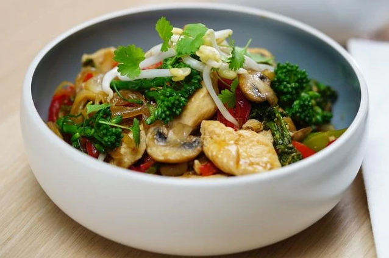

Chicken and vegetable stir-fry

For a healthy weeknight meal, you can rely on this basic stir-fry with crunchy bean sprouts, tender chicken and tasty vegies.
Ingredients
- 2 tbsp peanut oil
- 3 Lilydale Free Range Chicken Breast, trimmed, cut across the grain into thin strips
- 1 brown onion, cut into thin wedges
- 1 red capsicum, deseeded, cut into thin strips
- 250g button mushrooms or mushroom caps, sliced
- 1 bunch broccolini, cut into 4cm lengths
- 2cm piece fresh ginger, peeled, finely grated or chopped
- 2 garlic cloves, finely chopped
- 2 fresh birdseye chillies, deseeded if desired, thinly sliced
- 2 tbsp salt-reduced soy sauce
- 1 1/2 tbsp oyster sauce
- 1 tbsp water
- 100g bean sprouts, to serve
- Coriander leaves, to serve
- Cooked white rice or noodles, to serve
Steps
- Heat wok over high heat for about 1 minute. Add 1 tablespoon of the oil and swirl it around the wok to coat the entire cooking surface and heat for 30-60 seconds or until very hot. Add half the chicken strips and stir-fry for 1-2 minutes or until the chicken is sealed and just cooked through. Transfer the chicken to a plate and set aside. Add about half the remaining peanut oil to the wok and repeat the process with the remaining chicken strips.
- Add the remaining oil to the wok and heat over high heat until hot. Add the onion and capsicum and stir-fry for 2 minutes.
- Add the mushrooms and broccolini and stir-fry for a further 2 minutes. Add the ginger, garlic and chillies. Season with salt and stir-fry for 1 minute or until aromatic.
- Add the soy sauce, oyster sauce and water and toss for about 1 minute. Return the chicken to the wok and stir until the vegetables and chicken are coated with the sauces and the vegetables are tender crisp.
- Remove the wok from the heat, toss through the bean sprouts and coriander and serve the stir-fry immediately with cooked rice or noodles.